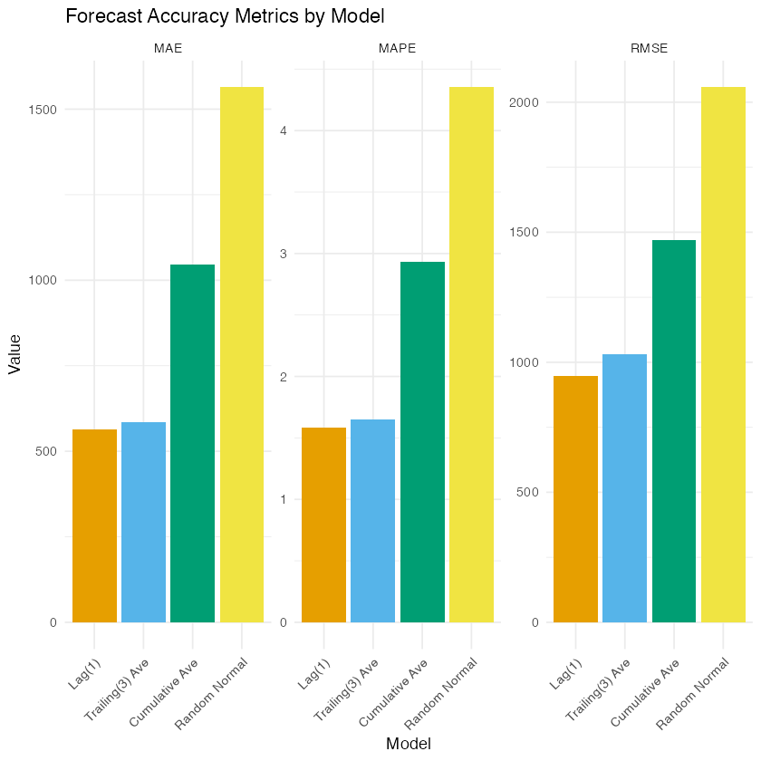

Class 9.3 - 预测分析的评估¶
1. 预测评估标准¶
在预测分析中，我们通常会和两个基准进行比较：
-
真实值（Actual Values）：
- 也就是和我们想要预测的目标变量的实际观测值进行比较
- 这是最直接的评估方法，能够告诉我们预测的绝对准确程度
-
随机预测（Random Forecast）：
- 也就是和一个瞎猜的预测进行比较
- 事实上，和真实值进行比较是有些严苛的
- 有的时候，我们如果能比瞎猜更好一些，就已经是不错的预测了
我们先导入包和数据，并且计算我们上一节的预测值（和上一节一样，先把日期转换成日期型，并且按时间顺序排好序）：
library(tidyverse)
library(lubridate) # 日期解析和处理
library(ggokabeito) # 色盲友好调色板
bos_2005_2015_fenway <-
read_csv("mlb_attendance.csv") |>
# 先按时间顺序排好序，这是计算滞后值的前提
mutate(game_date = dmy(ymd)) |>
arrange(game_date, game_num) |>
mutate(
att_lag1 = lag(attendance, 1),
att_avg_lag3 = (lag(attendance) + lag(attendance, 2) + lag(attendance, 3)) / 3,
att_historical_avg = lag(cummean(attendance))
)
2. 预测评估指标的定义¶
首先，我们来定义一下预测误差（Forecast Error）：
- 这个误差是个体层级的预测误差，也就是说每一个数据样本都有一个误差值
- 例如，在上座人数的例子中，每一场比赛都有一个预测误差，表示这一场比赛的实际上座人数与预测上座人数之间的差距
根据这个误差，我们可以计算一些误差指标（Error Metrics）
- 这些指标都是将个体层级的误差汇总成一个整体的度量
- 我们本小节来介绍以下常用的三个误差指标：
(1) MAE（平均绝对误差）¶
MAE（Mean Absolute Error，平均绝对误差）是预测误差的平均大小：
- 描述预测误差的平均大小，所有的误差权重相同
- 与变量本身同单位，并且具有直观的解释性
(2) RMSE（均方根误差）¶
RMSE（Root Mean Squared Error，均方根误差）：
- 更重视较大误差，误差越大，权重越大
- 为了与变量本身同单位，我们先对误差进行平方，计算平均值，然后再开根号
(3) MAPE（平均绝对百分比误差）¶
MAPE（Mean Absolute Percentage Error，平均绝对百分比误差）：误差相对于实际值的百分比
- MAPE 就没有单位了，而是以实际值的百分比表示误差，便于跨不同规模场景比较
- 并且同样有直观的解释性
(4) 如何选择评估指标¶
三个指标并没有谁绝对更好，选择哪一个，取决于我们要用预测来做什么决策：
- MAE：和变量同单位，最直观，每一个误差的权重都一样，适合"平均每场差多少人"这样的问题，比如排班和备货的计划，通常以 MAE 作为主要的指标
- RMSE：因为先把误差平方了，所以它对大的误差惩罚更重，如果出现一次很大的预测失误，代价特别高（比如严重缺人导致服务崩溃），那么应该多关注 RMSE
- MAPE：用百分比表示，没有单位，方便比较规模不同的场景，不过如果实际值很小或者接近 0，MAPE 就会变得很不稳定，在上座人数这个例子中，实际值都在三万左右，这个问题不明显
- 三个指标都是越小越好
3. 预测评估指标的计算¶
(1) 公平地比较各个模型¶
-
在计算误差指标之前，有一个需要注意的问题：不同的模型，有预测值的比赛并不一样：
- 一期滞后模型：第 1 场比赛没有预测值
- 三期移动平均模型：前 3 场比赛没有预测值
- 历史累计均值模型：第 1 场比赛没有预测值
-
如果每个模型在不同的比赛上计算指标，比较就不公平了，所以我们只保留所有模型都有预测值的比赛：
bos_eval <-
bos_2005_2015_fenway |>
drop_na(att_lag1, att_avg_lag3, att_historical_avg)
nrow(bos_eval)
[1] 888
drop_na()会去掉指定的列中有缺失值的行，891 场比赛中，有 888 场比赛是所有模型都有预测值的
(2) 单个模型的误差指标：以一期滞后模型为例¶
我们先以一期滞后模型为例，一步一步地计算它的误差指标：
# 第 1 步：计算每场比赛的预测误差
lag1_model_errors <-
bos_eval |>
# 只保留实际上座人数和一期滞后的预测值
select(attendance, att_lag1) |>
mutate(
# 预测误差：实际值减去预测值
error = attendance - att_lag1,
# 绝对误差（用于计算 MAE）
abs_error = abs(error),
# 平方误差（用于计算 RMSE）
squared_error = error^2,
# 百分比误差（用于计算 MAPE），用 % 表示
percentage_error = (error / attendance) * 100
)
# 第 2 步：把每场比赛的误差，汇总成整体的误差指标
lag1_model_metrics <-
lag1_model_errors |>
summarise(
# 平均绝对误差
MAE = mean(abs_error),
# 均方根误差
RMSE = sqrt(mean(squared_error)),
# 平均绝对百分比误差
MAPE = mean(abs(percentage_error))
)
lag1_model_metrics
| MAE <dbl> | RMSE <dbl> | MAPE <dbl> |
|-----------|------------|------------|
| 563.9718 | 947.7936 | 1.58017 |
- 也就是说，如果使用一期滞后模型，平均来说，我们每场比赛预测的上座人数，和实际的上座人数相差约 564 人（MAE），相当于实际上座人数的 1.58%（MAPE）
(3) 随机预测的基准¶
除此之外，我们再加入一个随机预测的基准模型：
# 设置随机数种子，保证每次运行得到的结果一样
set.seed(406)
# 随机预测：对每场比赛，从均值和标准差与上座人数相同的正态分布中，随机抽取一个数作为预测值
bos_eval <-
bos_eval |>
mutate(
att_rnorm = rnorm(
n(),
mean = mean(attendance),
sd = sd(attendance)
)
)
- 这个随机预测完全没有使用任何有用的信息（它只是在上座人数的整体范围内"瞎猜"），所以任何有价值的预测模型，都应该比它做得更好
- 注意，这个随机预测使用了全部比赛的均值和标准差，所以它只是一个用来参照的基准，并不是一个在现实中可以使用的预测方法
(4) 一次性计算所有模型的误差指标¶
对于其他模型，计算的步骤和一期滞后模型完全一样。如果每个模型都把上面的代码重复一遍，会非常冗长，我们可以先把数据变成长格式（回忆 5.1 节的 pivot_longer()），让所有模型的预测值放在同一列，再用 group_by() 按模型分组，一次性计算：
# 给每个模型起一个名字，用于展示
model_names <- c(
att_lag1 = "Lag(1)",
att_avg_lag3 = "Trailing(3) Ave",
att_historical_avg = "Cumulative Ave",
att_rnorm = "Random Normal"
)
ts_model_metrics <-
bos_eval |>
select(attendance, att_lag1, att_avg_lag3, att_historical_avg, att_rnorm) |>
# 变成长格式：每个模型的每场比赛的预测值占一行
pivot_longer(
cols = -attendance,
names_to = "model",
values_to = "prediction"
) |>
mutate(
model = model_names[model],
error = attendance - prediction
) |>
group_by(model) |>
summarise(
MAE = mean(abs(error)),
RMSE = sqrt(mean(error^2)),
MAPE = mean(abs(error / attendance)) * 100
) |>
# 按照我们定义的顺序排列模型
arrange(match(model, model_names))
# 变成长格式，用于画图（每个模型的每个指标占一行）
ts_metrics_long <-
ts_model_metrics |>
pivot_longer(
cols = -model,
names_to = "metric",
values_to = "value"
)
ts_metrics_long
| model <chr> | metric <chr> | value <dbl> |
|-----------------|--------------|-------------|
| Lag(1) | MAE | 563.97185 |
| Lag(1) | RMSE | 947.79356 |
| Lag(1) | MAPE | 1.58017 |
| Trailing(3) Ave | MAE | 585.48649 |
| Trailing(3) Ave | RMSE | 1029.46881 |
| Trailing(3) Ave | MAPE | 1.64960 |
| Cumulative Ave | MAE | 1045.28153 |
| Cumulative Ave | RMSE | 1470.16345 |
| Cumulative Ave | MAPE | 2.93224 |
| Random Normal | MAE | 1563.80927 |
| Random Normal | RMSE | 2057.15381 |
| Random Normal | MAPE | 4.35174 |
- 其中 Lag(1) 的结果，和我们上面一步一步计算出来的完全一样
model_names[model]的作用是，把model这一列的名字（比如att_lag1），替换成我们起的名字（比如Lag(1)）
最后，我们可以绘制一个误差指标对比图，来更直观地比较不同模型的表现：
ts_metrics_long |>
# 把模型变成因子，来控制作图时模型的先后顺序
mutate(model = factor(model, levels = model_names)) |>
ggplot(aes(x = model, y = value, fill = model)) +
# 每个模型一根柱子
geom_col() +
# 每个指标一个图，并且每个图的 y 轴范围可以不同
facet_wrap(~ metric, scales = "free_y") +
labs(
title = "Forecast Accuracy Metrics by Model",
x = "Model",
y = "Value"
) +
theme_minimal() +
# 使用色盲友好的 Okabe–Ito 调色板
ggokabeito::scale_fill_okabe_ito() +
# 隐藏图例（因为已经重复了），并且把 x 轴的标签旋转 45 度
theme(
legend.position = "none",
axis.text.x = element_text(angle = 45, hjust = 1)
)

从上图中，我们可以看到：
- 三个指标都有相同的模型排名：一期滞后 > 三期移动平均 > 历史累计平均 > 随机预测
- 一期滞后模型表现最好（MAE 约 564，MAPE 约 1.6%），三期移动平均模型紧随其后，两者非常接近
- 历史累计平均模型的误差，几乎是前两个模型的两倍（MAE 约 1,045），这正是我们在 9.2 节看到的：它对近期的变化太迟钝了
- 并且四个模型都比随机预测更好，这说明它们确实捕捉到了数据中的有用信息
- 在这个例子中，最近一场比赛的上座人数，是对下一场比赛上座人数最有价值的信息，用更多的历史（三期平均）并没有带来改进，用太久远的历史（累计平均）反而更差
4. 训练集与测试集¶
到目前为止，我们是用全部 11 年的比赛来评估模型的，但是这里有一个很重要的问题：
- 我们在评估和选择模型的时候，是在同一批数据上进行的，这样得到的评估结果，往往会比模型在真正没见过的新数据上的表现更乐观
- 预测的真正目的，是预测未来，而不是解释已经发生的事情，所以我们需要知道的是：这个模型在新数据上表现怎么样
为了回答这个问题，我们通常会把数据分成两部分：
- 训练集（Training Data）：用来建立、比较和选择模型
- 测试集（Test Data）：先"藏"起来，不参与模型的选择，最后只用一次，用来检验选中的模型，在没见过的数据上表现得怎么样
对于时间序列数据，我们应当按照时间来划分（用过去预测未来），而不是随机划分：
- 在这个例子中，我们把 2005–2014 年的比赛作为训练集（共 810 场，其中有预测值、可以用来计算指标的有 807 场），把最后一个赛季 2015 年的比赛作为测试集（81 场）
- 注意，测试集里的预测，仍然遵守"只能使用预测那一刻已知的信息"这条原则：比如预测 2015 年的某场比赛，使用的是这场比赛之前的比赛数据（这些数据在当时是已知的）
我们在两个数据集上，分别计算每个模型的误差指标：
set_comparison <-
bos_eval |>
# 按年份划分训练集和测试集
mutate(dataset = if_else(year <= 2014, "train", "test")) |>
select(dataset, attendance, att_lag1, att_avg_lag3, att_historical_avg, att_rnorm) |>
pivot_longer(
cols = -c(dataset, attendance),
names_to = "model",
values_to = "prediction"
) |>
mutate(
model = model_names[model],
error = attendance - prediction
) |>
group_by(dataset, model) |>
summarise(
MAE = mean(abs(error)),
RMSE = sqrt(mean(error^2)),
MAPE = mean(abs(error / attendance)) * 100,
.groups = "drop"
) |>
arrange(desc(dataset), match(model, model_names)) |>
mutate(across(c(MAE, RMSE, MAPE), ~ round(.x, 2)))
set_comparison
| dataset <chr> | model <chr> | MAE <dbl> | RMSE <dbl> | MAPE <dbl> |
|---------------|-----------------|-----------|------------|------------|
| train | Lag(1) | 502.21 | 869.17 | 1.40 |
| train | Trailing(3) Ave | 507.03 | 935.28 | 1.42 |
| train | Cumulative Ave | 989.23 | 1396.55 | 2.76 |
| train | Random Normal | 1526.28 | 2024.85 | 4.23 |
| test | Lag(1) | 1179.32 | 1523.66 | 3.36 |
| test | Trailing(3) Ave | 1367.16 | 1704.00 | 3.89 |
| test | Cumulative Ave | 1603.77 | 2064.88 | 4.68 |
| test | Random Normal | 1937.72 | 2354.88 | 5.57 |
从这个结果中，我们可以看到：
- 所有模型在测试集上的误差，都比在训练集上大得多：比如一期滞后模型的 MAE，在训练集上是 502，在测试集（2015 年）上是 1,179，是训练集的 2.3 倍
- 这是因为 2015 年的上座人数，和之前的年份相比有了变化：2015 年的平均上座人数是 35,564，低于 2005–2014 年的 36,789，并且最低的一场只有 31,704，波动更大，所以所有预测方法的误差都变大了
- 这就是为什么我们需要测试集：如果只看训练集上的结果，我们会严重高估模型在未来的预测能力
- 不过，模型的排名没有发生变化：一期滞后依然是最好的，并且四个模型在测试集上依然都比随机预测更好，这说明我们前面的结论是可靠的
- 需要说明的是，我们这里比较的四个预测方法，都没有需要用数据"训练"的参数，所以训练集和测试集的区别，主要体现在检验结论是否可靠上；但是在更复杂的预测模型中（比如有很多可以调整的参数，或者有很多候选的预测变量），绝对不能用测试集来挑选模型，否则测试集就不再是"没见过的数据"了，结果依然会过于乐观
5. 小结¶
这一章，我们学习了预测分析的基本流程：
- 明确要预测的结果，以及预测时已知的信息，并且只使用预测那一刻已知的信息，避免前视偏差
- 按时间顺序整理好数据（先把日期转换成日期型，再排序），然后构建候选的预测方法：一期滞后、移动平均、历史累计均值
- 用误差指标评估预测：MAE、RMSE、MAPE，并且和随机预测这样的基准比较，比较时要保证每个模型使用的是同一批比赛
- 用训练集选择模型，用测试集检验模型，并且要意识到，模型在新数据上的表现，通常不如在已有数据上好
- 根据业务决策来选择合适的指标，并且把误差翻译成业务的语言（比如"平均每场差约 564 人"，意味着需要多安排多少名员工）
最后，要提醒大家：
- 这一章的预测方法，都只使用了上座人数自己的历史，是最简单的时间序列方法，在更复杂的场景中，我们还可以引入星期几、天气、对手、促销等更多的信息来预测，但是不论方法多么复杂，评估的流程都是一样的：用没有参与模型选择的数据来检验预测的准确性
- 预测分析关注的是"能预测多准"，而不是"为什么会这样"，如果想知道某个因素（比如促销）是否导致了上座人数的变化，我们需要使用 Class 8 中学习的因果分析的方法